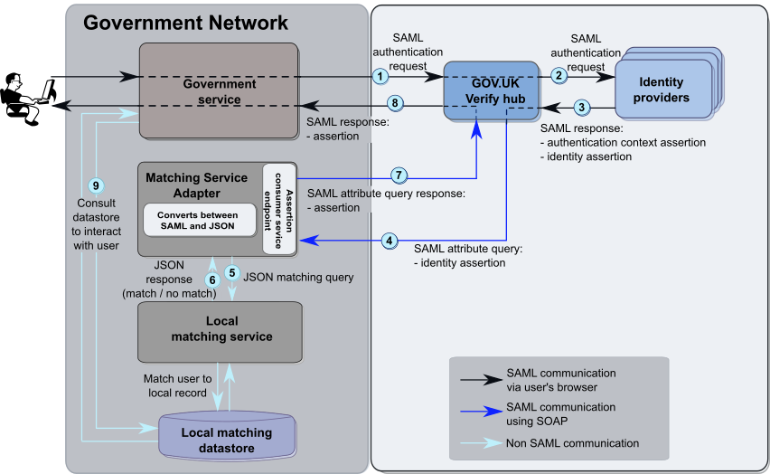
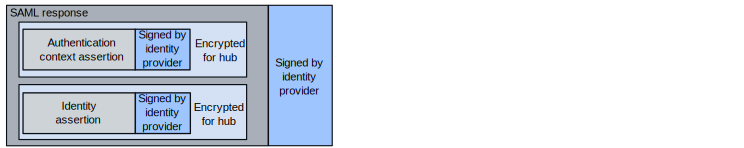
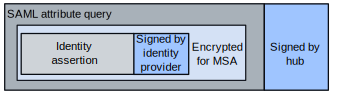
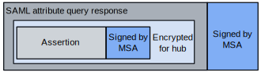
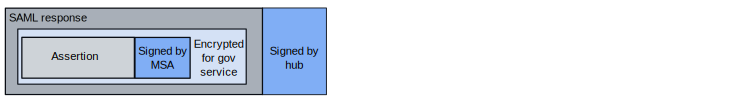

How SAML works¶
SAML messages take the form of requests and responses. Messages can contain assertions about the user’s identity. GOV.UK Verify uses the following types of assertion:
- identity assertions - contain information about the user
- authentication context assertions - contain information related to how authentication was carried out, for example, the level of assurance
- fraud event assertions - contain identifiers related to an identified fraud detected by the identity provider
The SAML profile defines these assertions. See the list of documents defining the SAML profile.
All SAML messages that pass between the government service, the hub, and identity providers are sent via the user’s browser.
This diagram shows the SAML message flow within the GOV.UK Verify federation. The numbers identify each stage in the flow. See below for explanations.

SAML message flow in the GOV.UK Verify federation |
For more details, see the diagrams: |
- The government service sends a SAML authentication request to the GOV.UK Verify hub. The request indicates that a user wants to access the service and needs to verify their identity using GOV.UK Verify.
- The GOV.UK Verify hub prompts the user to select an identity provider to authenticate them. The GOV.UK Verify hub forwards the SAML authentication request to the chosen identity provider.
- The chosen identity provider authenticates the user based on the required level of assurance. The identity provider then sends a SAML response to the GOV.UK Verify hub:

- SAML response signed by the identity provider
- authentication context assertion signed by the identity provider and encrypted for the GOV.UK Verify hub - this asserts that the user’s identity is authenticated; it also contains contextual information, including the level of assurance
- identity assertion signed by the identity provider and encrypted for the GOV.UK Verify hub - this contains the user’s matching dataset and the persistent identifier
Note
For more information on the contents of the assertions, see the diagrams for matching cycles and user account creation.
- The GOV.UK Verify hub sends a SAML attribute query to the government service’s Matching Service Adapter:

- SAML attribute query signed by the GOV.UK Verify hub
- identity assertion signed by identity provider and encrypted for the Matching Service Adapter
- The Matching Service Adapter translates the SAML attribute query into a JSON (JavaScript Object Notation) matching query and forwards it to the service’s local matching service.
The local matching service tries to match the user with a record in the government service’s database.
- The local matching service returns a JSON response (
matchorno match) to the Matching Service Adapter. - In the case of a
matchresponse, the Matching Service Adapter translates the JSON response into a SAML attribute query response and forwards it to the GOV.UK Verify hub:

- SAML attribute query response signed by the Matching Service Adapter
- assertion signed by the Matching Service Adapter and encrypted for the GOV.UK Verify hub - this assertion contains the hashed persistent identifier
- The GOV.UK Verify hub sends a SAML response to the service, authenticating the user:

- SAML response (optionally) signed by the GOV.UK Verify hub
- assertion signed by the Matching Service Adapter and encrypted for the government service
- The government service retrieves the user’s record from the datastore. This allows the government service to interact with the user.